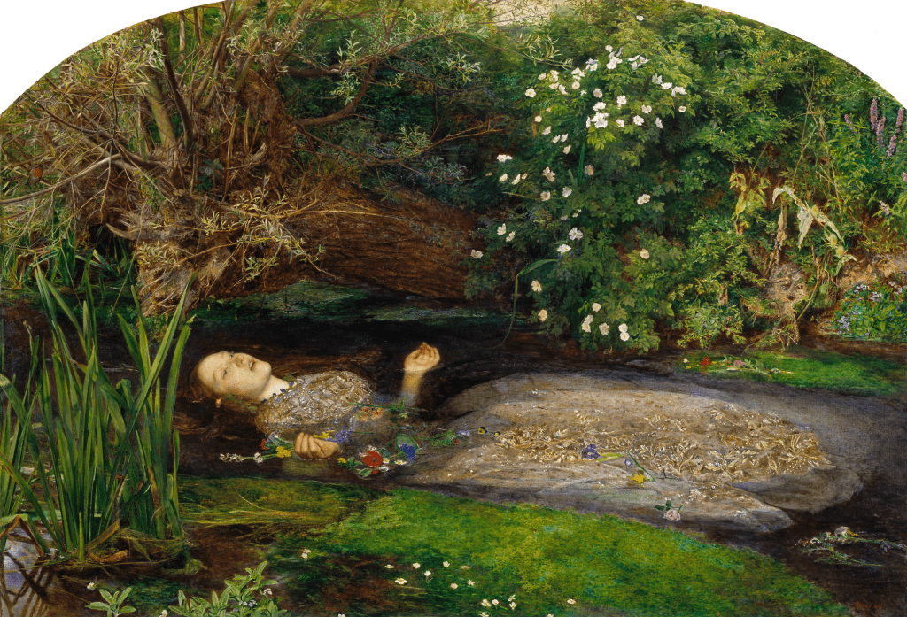

John Everett Millais
Ofelia
"Ofelia" es una de las obras más representativas del movimiento prerrafaelita. En esta pintura, Millais retrata el trágico momento en que la protagonista de Hamlet se ahoga en un arroyo, rodeada de flores. La obra destaca por su realismo naturalista, el simbolismo floral y el dramatismo emocional que transmite. Millais capta el tránsito entre la vida y la muerte en el personaje de Ofelia. Situarla sobre el lecho del río fue algo que ningún otro artista había hecho antes, y mucho menos de la manera en que se atrevió el autor, confiriéndole al tema un tratamiento totalmente revolucionario.
Otras obras Millais
Un Hugonote

La Chica Ciega

Mariana

Juana de Arco